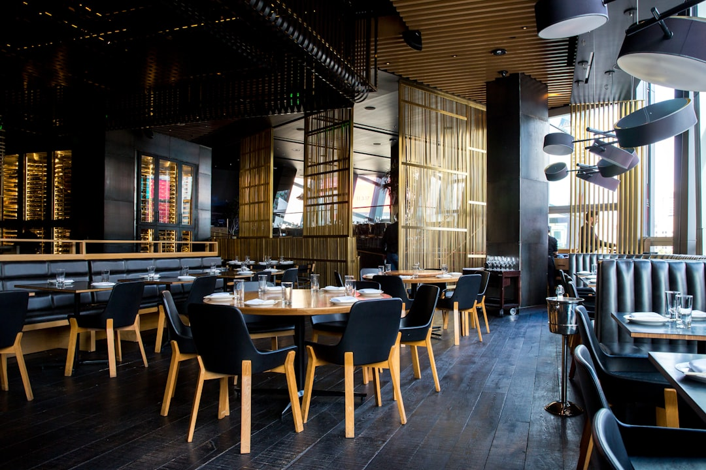

Ristorazione 4.0: Come Smart Experience / Taste Engine Rivoluziona il Menu e Migliora il Servizio Horeca

Ristorazione 4.0: Rivoluziona la Gestione del Menu con Smart Experience / Taste Engine per Ristoratori e Chef
- I menu PDF statici e sgranati compromettono l’esperienza del cliente e rallentano il servizio.
- I camerieri spesso non hanno il tempo né le competenze per illustrare allergeni e abbinamenti, rischiando errori costosi.
- Smart Experience / Taste Engine trasforma il menu in un e-menu interattivo con Maître Virtuale AI, migliorando la comunicazione e aumentando la soddisfazione del cliente.
Analisi approfondita della notizia e delle implicazioni operative
Nel settore Horeca, la gestione efficiente e chiara dell’offerta gastronomica è un fattore chiave di successo. Tuttavia, molti ristoratori e titolari di locali si affidano ancora a menu in formato PDF o cartaceo, spesso di bassa qualità visiva o poco aggiornati, che sgranano e risultano poco leggibili su dispositivi digitali. Ciò compromette gravemente la percezione del cliente e, soprattutto, la trasparenza sulle informazioni fondamentali come ingredienti, allergeni e abbinamenti consigliati.
Il personale di sala, seppur fondamentale nel guidare l’esperienza culinaria, si ritrova frequentemente oberato. Spiegare nel dettaglio ogni piatto, suggerire vini adeguati e rispondere a dubbi su reazioni allergiche diventa un collo di bottiglia operativo che riduce la qualità complessiva del servizio. In un mercato sempre più competitivo e attento alla personalizzazione, questi limiti rappresentano un problema economico e reputazionale rilevante per gli operatori Horeca.
Le conseguenze e i costi di non agire
Mantenere menu PDF statici, spesso digitalizzati con scarsa cura, comporta diversi risvolti negativi. Prima di tutto, i clienti possono allontanarsi a scapito della trasparenza informativa, con rischi di allergie non gestite correttamente o di attese prolungate per ricevere spiegazioni dai camerieri troppo impegnati. Questo provoca un calo di soddisfazione, che si traduce in recensioni negative e minori ritorni al locale.
Per i camerieri, l’overload comunicativo rischia di generare stress e inefficienze. La scarsa capacità di rispondere rapidamente ai quesiti più comuni può favorire errori nell’ordine, aumentare i tempi di servizio e ridurre la rotazione dei tavoli. Nel complesso, tutto ciò si traduce in un impatto diretto sui ricavi e sui costi operativi, con una riduzione della marginalità del business.
Infine, l’assenza di strumenti digitali all’avanguardia lascia i ristoranti fuori dal trend dell’innovazione tecnologica, elemento sempre più decisivo per attrarre un pubblico digitale e socialmente connesso, attento all’esperienza ma anche alla sicurezza alimentare e alla qualità del servizio.
Come Smart Experience / Taste Engine risolve il problema
In questo contesto si inserisce Smart Experience / Taste Engine, la soluzione SaaS progettata specificamente per ristoratori, chef e titolari di locali Horeca che vogliono superare i limiti tradizionali. Questo e-menu interattivo integra un Maître Virtuale AI, che funziona in modo molto familiare agli utenti grazie a un’interfaccia simile a WhatsApp, facilitando la comunicazione diretta tra cliente e locale.
Le sue principali funzionalità includono:
- E-menu Dinamico e Interattivo: Visualizza portate con immagini di alta qualità, schede emozionali dettagliate e informazioni sugli allergeni, facilmente consultabile da qualsiasi dispositivo mobile senza la necessità di app aggiuntive.
- Maître Virtuale AI: Risponde in tempo reale alle domande sui piatti, ingredienti e possibili allergie, alleggerendo il carico dei camerieri, migliorando la comunicazione e riducendo errori.
- Abbinamento Vini con Sommelier Digitale: Suggerisce accuratamente i migliori abbinamenti enologici con ogni piatto, valorizzando l’esperienza gastronomica e aumentando il valore medio dello scontrino.
Il tutto con una semplice e unica spesa di sblocco pari a €390.00, senza costi ricorrenti o abbonamenti, inclusivo di jingle personalizzato per rafforzare l’identità del brand del locale.
| Gestione Tradizionale | Con Smart Experience / Taste Engine |
|---|---|
| Menu PDF statici e spesso sgranati dai dispositivi digitali | E-menu interattivo, perfettamente leggibile con schede emozionali di ogni portata |
| Camerieri oberati che devono spiegare allergeni e preparazioni manualmente | Maître Virtuale AI risponde istantaneamente a quesiti su ingredienti e allergeni |
| Assenza di consigli mirati su abbinamenti vini | Sommelier digitale suggerisce abbinamenti personalizzati per esaltare il gusto |
| Mancanza di strumenti per migliorare la customer experience digitale | Piattaforma integrata senza abbonamento, con onboarding semplice e comunicazione moderna |
💡 Ti è stato utile questo approfondimento?
Condividilo con un collega o un amico del settore Ristoratori, Chef, Titolari di Locali e Attività Horeca a cui potrebbe interessare!
FAQ: Domande frequenti per Ristoratori e Titolari Horeca
1. Smart Experience / Taste Engine richiede abbonamenti mensili?
No, si tratta di un acquisto con sblocco una tantum a €390.00, senza costi ricorrenti e con jingle personalizzato incluso.
2. Come funziona il Maître Virtuale AI dal punto di vista operativo?
Il Maître Virtuale è integrato direttamente nel e-menu, permette agli utenti di interagire via chat simile a WhatsApp, rispondendo in tempo reale a domande su ingredienti, allergeni e dettagli dei piatti.
3. È possibile aggiornare autonomamente le schede delle portate?
Sì, il sistema è progettato per essere intuitivo, consentendo al personale di aggiornare menu, foto e abbinamenti senza competenze tecniche avanzate.
Inizia Subito
Sblocco una tantum a €390.00 senza abbonamenti con Jingle incluso.
Fonti Ufficiali e Risorse Esterne
Scopri l'Intelligenza Artificiale per la tua attività
Prova le soluzioni B2B di RM Studio e ottimizza le tue vendite.
Scopri Smart Experience / Taste Engine